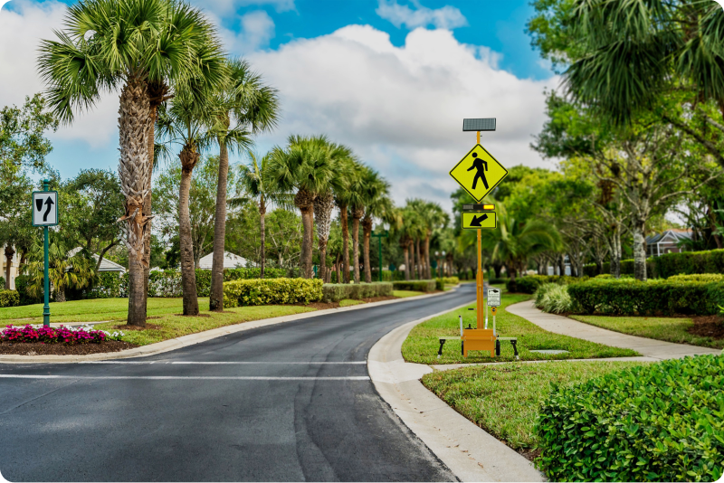

TAPCO Crosswalk Effectiveness Analysis
A proof-of-concept edge platform for TAPCO to measure driver speed reduction at smart crosswalks.

Tech Stack
Python (pandas, NumPy), C++, Rust, Raspberry Pi, SQLite, Dash, Radar(s), UART
Sponsor
TAPCO (Traffic and Parking Control Co.) | MSOE Senior Design
Overview
Traffic agencies currently lack a low-cost, automated way to measure how smart crosswalk warning systems affect driver behavior at specific installations. This two-semester, five team member project develops a proof-of-concept system that captures continuous vehicle approach speed, correlates it with crosswalk activation states, and calculates effectiveness metrics for traffic engineers.
Planned Project Deliverables
Field Collection Hardware: A battery-powered Raspberry Pi setup in a portable enclosure that streams radar speed data and listens for activation signals from a TAPCO crosswalk controller. Data & Analytics Pipeline: Python scripts to clean raw radar tracks, store time-series data locally in SQLite, and calculate speed changes—like mean speed drop and 85th-percentile speed—between active warnings and normal baseline traffic. Reporting Dashboard: An interactive Dash web app for TAPCO engineers to view vehicle speed plots, compare baseline vs. active traffic overlays, and export summary reports.